| VSO Labrador Clues Voluntary Service Overseas (VSO) | |
| Llewelyn | |
| (2013) | |
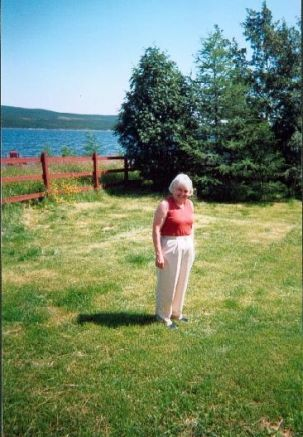
夫人マーガレット負担、市長ポートホープシンプソンタウン 、 200 2年7月 2 8 アレクシ ス· ベイを見下ろす前庭アレクシスホテル
Mrs. Margaret Burden, The Mayor Port Hope Simpson Town, front garden Alexis Hotel overlooking Alexis Bay 28 July 2002
あなたは今まで自分自身のように他の人々のように幸運ではなかっ助力について考えたことはありますか？
まあ、それは主に英国か
ら
5
3
若
い
1
8
か
ら
1
9
歳は
、
196
9
年か
ら
197
0
年から実行に着手したかを正確になります。
3
3
年フォワードクロックを回し、まだ今日何が起こっているかを検出します。
現在約実話の継続ラブラドール、ニューファンドランド、カナ
ダ
196
0
年か
ら
197
0
年の海岸沿いの小さなコミュニティの学校で働いていた残り
の
5
3
分
の7
ボランタリーサービス海外
（
VS
O）
1
8
歳のための検索を。
年
は
200
2
年である：どのように、な
ぜ
VS
O
の検索は約来た。
私
は
200
2
年
に1
日インターネットを閲覧してい
た
..
.
町
の"
カミングホー
ム"
に戻って私の旅行のために支払われたことでポートホープシンプソン、ラブラドール、ニューファンドランド、カナダのマーガレット負担の大きい寛大さ、市長を返済するための方法を見つけよ
う
200
2
年のお祝い。このすべては
、
196
9
年からので、約来
た
- 7
0
私はポートホープシンプソン聖公会学校
で
VS
O
の教師として働いていたし
、
3
2
年後には、かなりアウトオブブルーのために、この完全に予期しない、幻想的な招待状が来ていた私非常に単純に返済しなければならなかっ
た
...
Have you ever thought about helping other people not as fortunate as yourself?
Well, that is exactly what 53 young 18--19 year olds mainly from the UK set out to do from 1969-70.
Turn the clock forward 33 years and discover what is still going on today:
A true story about the current on-going search for the remaining 7 / 53 Voluntary Service Overseas (VSO) 18 year olds who worked in the schools of the small coastal communities of Labrador, Newfoundland, Canada 1960-70.
The Year is 2002: how and why the search for the VSO came about.
I was browsing the internet one day in 2002...trying to find a way to repay the great generosity of Margaret Burden, Mayor of Port Hope Simpson, Labrador, Newfoundland, Canada for having paid for my trip back out to the Town's "Coming Home" celebrations in 2002. All this had come about because from 1969 -- 70 I had worked as a VSO teacher at the Anglican School in Port Hope Simpson and then 32 years later, quite out-of-the-blue, had come this completely unexpected, fantastic invitation which I quite simply had to repay...
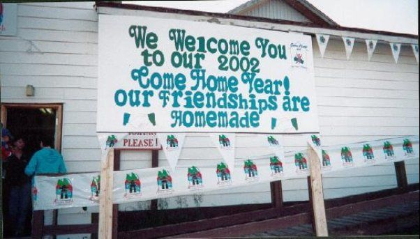
ポートホープシンプソン、ラブラドール、ニューファンドランド、カナダでは、コミュニティセンターの外にホームセレブレーショ ン 200 2 を来
Coming Home Celebrations 2002 outside the Community Centre, Port Hope Simpson, Labrador, Newfoundland, Canada
私は私の借金を再支払方法についての私の頭を抱え込んたように、私は聖公会の学校外の特定のビ ル Rompke y や他民族に会い、彼は周りのまだあったのか疑問に思ったとき、私は訪問を想起した。法案はその後、東部地区、ニューファンドランド州、カナダの海岸沿いの小さな学校のチェーンの管理に責任がニューファウンドランドの教育委員会の教育長だった。彼は派遣前の教育政策を継続するためにロンドン の VS O との接触を維持し、奨励することに尽力されてい た "VS O の若い学校リバ ー 196 0 年か ら 197 0 年計 画" と学校のボランティア。
As I was racking my brains about how to re-pay my debt, I recalled a visit when I met a certain Bill Rompkey and other folk outside the Anglican School and wondered if he was still around. Bill was then Superintendent of the Newfoundland School Board, responsible for the administration of a chain of small schools along the coast of eastern Labrador, Newfoundland Province, Canada. He had been instrumental in maintaining and encouraging contact with VSO in London to continue the previous education policy of staffing the schools with the" VSO Young School Leavers 1960 -- 70 Programme "of volunteers.
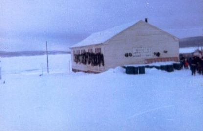
アングリカ ン· スクール、ポートホープシンプソン、ラブラドール、ニューファンドランド、カナダの 冬 1969
The Anglican School, Port Hope Simpson, Labrador, Newfoundland, Canada Winter 1969
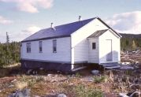 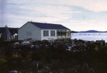
アングリカ ン· スクール、ポートホープシンプソン、ラブラドール、ニューファンドランド、カナダの 冬 1969
The Anglican School, Port Hope Simpson, Labrador, Newfoundland, Canada Summer 1970
驚くなかれ！法案はまだ周りにあった、それはすべてのそれらの年前にラブラドール の VS O をトレースすることができるかどうかを確認するために彼の素晴らしいアイデアだっ た .. . または多分それは共有のアイデアだっ た .. . とにか く .. . 私は思い出すことができな い .. . ここにいるので、彼はその後であり、ほとんどが雄弁に、被写体に言わなければならなかった
Lo and behold! Bill was still around and since it was his great idea to see if the VSO in Labrador all those years ago could be traced...or maybe it was a shared idea...anyway...I can't recall...here is what he subsequently and most eloquently had to say on the subject,
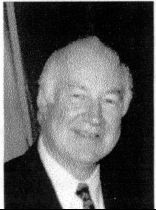
右閣下上院議員ウィリア ム Rompkey
The Right Honourable Senator William Rompkey
ラブラドール
の
"VSO
大西洋横断の関係は古いです。何世紀もの間、旧世界からの人々は、いくつかの永遠、しばらくの間、新たに渡った
。
1
8
世紀後半か
ら
1
9
世紀初頭世紀の間に提供するために来た人たちは、主に宣教師や聖職者であった
。
2
0
世紀の間にボランティア団体の一連のサービスと冒険の両方にニューファンドラン
ド·
ラブラドール州に向かった。サ
ー·
ウィルフレッ
ド·
グレンフェルは、厳しく美しい土地で、彼自身のカリスマ性と必要
性
の彼の物語を通して、ラブラドールに（無給）ホームページに移動を集めました。小さい規模でそうニューイングランドのケベックラブラドールミッション財団と牧師ボ
ブ·
ブライアンをしました。それでも後で若いカナダ人の会社はサービスの肥沃な分野に若い人を送った
。
VS
O
はその静脈とその文化の一部になっています。
現代の学校や教員住宅のラブラドールで、今では可能性よりもはるかに優れた専門家を追求し、保持することができます。しかし
、
196
0
年代
と
7
0
年代には世話人以上だった教師とのすべての沿岸教室を埋めるための挑戦だった。もう一度ブリトン人は、まだ満たされていないニーズを持っていた地域に手を貸すために北大西洋を越え達した
。
25
0
年のラブラドールを務めている牧師ビ
ル·
ピーコック、モラヴィアミッションの長は、来るべきコールを送った。そしてそれは、明るくにぎやかな英国の若者、良質のグラマースクールのレベルを持つほとんどのスコア
で
195
0
年代
と
6
0
年代に答えていた。彼らが持っていた、ニーバーの言葉にあるように、静けさは、彼らが変更できなかったこと、彼らはできるものを変える勇気と、違いを知って知恵を受け入れます。そして、彼らは楽しい時間を過ごした。私
は
VS
O
を開始しませんでしたが、私は確かにそれを奨励し、それを歓迎した。そして、彼らは言い換えテニスン、彼らが出会ったすべての部分にあった。彼らは、学校にはなくてコミュニティにだけでなく、自分自身を投げた。彼らが与えたとして、彼らはラブラドールから取った。彼らは狩猟や釣り、トレッキングやカヌー
と
skidooin
g
または単に糸またはそれに近い北の一部としなやかななめした遊牧民
と
mugu
p
を持った。
そのうちのいくつかは、宿泊されたまだラブラドールへとニューファンドランドへの異常な貢献をしている。しかし、私はそれらのすべてが彼らの心の中に、彼らはまだその時、その場所を大切にしているラブラドールの少しを運ぶことを知っています。また、覚えている人たちのものは、彼らが残したラブラドー
ル·
コミュニティは、彼らが来たと
き
よりも少し優れていたことを知っています。そして、どのような人生が程度であることではありません：あなたはそれを発見したよりも少し良い世界を残す。私が覚えている。
私は敬礼して
。
"
ラブラドールの土地と人々の歴史
の
Bill Rompke
y
でラブラドールの物語は、親密な外観。
布
077352574
2
発売日
：
200
3年9月
3
0
日カリフォルニア
州
29.9
5
ド
ル|
米
国
29.9
5
ド
ル|
イギリ
ス
£22.95
6×
9 224pp 2
4
写真の題材：歴史：カナダ
"THE VSO IN LABRADOR
The trans-Atlantic relationship is old. For centuries people from the Old World crossed to the new, some for a time, some forever. During the late 18th and early 19th centuries those who came to serve were mostly missionaries and clergy. During the 20th century a series of volunteer organizations headed to Newfoundland and Labrador for both service and adventure. Sir Wilfred Grenfell, through his own charisma and his tales of need in a harshly beautiful land, attracted WOPS (Without Pay) to Labrador. On a smaller scale so did Rev. Bob Bryan with the Quebec-Labrador Mission Foundation in New England. Still later the Company of Young Canadians sent young people to fertile fields of service. VSO is in that vein and part of that culture.
With modern schools and teacher residences Labrador now can seek and hold professionals much better than it could. But in the 1960s and 70s it was a challenge to fill all coastal classrooms with teachers who were more than caretakers. Once more Britons reached across the North Atlantic to lend a hand to territories that still had unfulfilled needs. Rev. Bill Peacock, Superintendent of Moravian Missions, which has served Labrador for 250 years, sent out the call to come. And it was answered in the 1950s and 60s by scores of bright and boisterous British young people, most with good quality grammar school A levels. They had, in the words of Niebuhr, the serenity to accept the things they could not change, the courage to change the things they could, and the wisdom to know the difference. And they had fun. Although I did not initiate VSO, I certainly encouraged it and welcomed it. And they were, to paraphrase Tennyson, a part of all that they met. They threw themselves not only into the schools but into the communities. And they took from Labrador as they gave. They took hunting and fishing and trekking and canoeing and skidooing or simply having a yarn or a mugup with some lithe and tanned nomad of the near north.
Some of them stayed and are still making unusual contributions to Labrador and to Newfoundland. But I know that all of them carry a little bit of Labrador in their hearts and that they still cherish that time and that place. And those of us who remember also know that when they left Labrador communities were a little better than when they came. And isn't that what life is about: leaving the world a little better than you found it. I remember.
I salute them."
The Story of Labrador by Bill Rompkey An intimate look at the history of the land and people of Labrador. Cloth 0773525742 Release date: 2003-09-30 CA $29.95 | US $29.95 | UK £22.95 6 x 9 224pp 24 photographs Subjects: History: Canadian
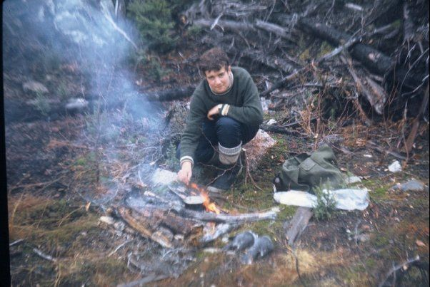
ポートホープシンプソン、ラブラドール、ニューファンドランド、カナ ダ 197 0 近くの森の中でお茶を入れることを有す る 1 8 歳の著者、。
The Author 18 years old, having a brew-up in the woods near Port Hope Simpson, Labrador, Newfoundland, Canada 1970.
彼は教育委員会の教育長であっ
た
ビルは、最も可能性の高い約どの学
校
VS
O
の若者を割り当てるようにした意思決定を行うための責任だった。そしてそれがあっ
た
...196
9年8
月に、私はポートホープシンプソン内の別のウェルシ
ュ
LA
D
（またジョージズアットザコーブの夏決済で働いていた人）と自分を一緒に発見した。
私は思っていなかった時点
で2
ウェルシュ若い衆が選択されていなければならない理由について、あまりに多くのそれは多分偶然であっ
た
ことを除き、ポートホープシンプソンで働くために来ましたが、後知恵で私は今、それが最も確かではなかったと信じて！
RE
F
。確立された事実は
、
"
ポートホープシンプソンの
謎
" Amazon.co
m
内で見つけることができます
マーガレットへの感謝の心からの借金を返済するための私の必要性
が
Bil
l
のサポートや励ましと組み合わされたときに私が決めた
の"
ギ
ブ·
イッ
ト·
ゴ
ー"
と私はラブラドー
ル
196
9年
VS
O
の教育の歴史について発見できるかを確
認
- 7
0
。その時点で、私
は
196
9年8
月モントリオー
ル
2
1
に流出してい
た
11 VS
Oの1
き、その後海岸に沿って張られ、割り当てられた集落への以降を譲渡したことを除いて、実質的には何も知りませんでした。
70
-
私は、彼ら
が
VS
O
参加者
は
196
9
年との接触に私を置くことができるかどうかを尋ねるロンド
ン
VS
O
に書き込むことで、私の質問を始めました。私はぶっきらぼうに彼らが私だけに名前と日付のリストを送信することができ、これは私が数週間後に受信したことを自分のノートのコピーであることになっていた（彼らのデー
タ·
プライバシ
ー·
ポリシーのために）通知された：
Bill, when he was Superintendent of the School Board had most likely been responsible for making decisions about which schools in which to allocate the young people of the VSO. And so it was...that in August 1969 I found myself along with another Welsh lad (who also worked at the summer settlement of George's Cove) in Port Hope Simpson.
At the time I didn't think too much about why 2 Welsh lads should have been chosen came to work at Port Hope Simpson except that it was maybe coincidental but with the benefit of hindsight I now believe it most certainly wasn't!
Ref. Established facts can be found within "THE PORT HOPE SIMPSON MYSTERIES" Amazon.com
When my need to repay the heartfelt debt of gratitude to Margaret was combined with Bill's support and encouragement I decided to 'give-it-a-go' and see what I could discover about the educational history of the VSO in Labrador 1969 -- 70. At that point in time, I didn't know virtually anything except that I had been 1 of 11 VSO who had been flown out to Montreal 21 August 1969 and then transferred onwards to their allocated settlements strung out along the coast.
I started off my enquiries by writing to VSO in London asking if they could put me in touch with the VSO participants 1969 -- 70. I was curtly informed (due to their Data Privacy Policy) that they were only allowed to send me a list of names and dates and this is a copy of their note that I received a few weeks later:
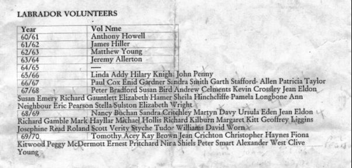
本社カールトンハウ
ス
27
A
カールトンドライブ、パトニー、ロンドン
、
SW152B
S
英国メインスイッチボー
ド
4
4（0）
208780750
0
ウェブサイ
ト
http://www.vso.or
g
：ロンドンの現在のアドレス
に
VS
O
によって供給され
る
70
-
ラブラドルボランティ
ア
196
0、
LIST O
F
。イギリ
ス
/
ビルは絵がその旨を千の言
葉
..
.
または単語を価値がある
と
...
2
つの項目は、私の研究活動の始まりとなった励ましの言葉で私を送ることができたことを、次の写真と一緒に：
LIST OF LABRADOR VOLUNTEERS 1960 -- 70 supplied by VSO in London Current address: Head office Carlton House 27A Carlton Drive, Putney, London, SW15 2BS UK Main switchboard +44 (0)20 8780 7500 Website http://www.vso.org.uk/
Along with the following photograph that Bill was able to send me with the words of encouragement that a picture is worth a thousand words...or words to that effect...the 2 items marked the beginning of my research work:
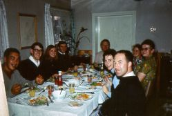
モラヴィアのミッションでの食事
Meal at Moravian Mission
200
3年
/ PROGRESS
カレ
ン·
ブラックモア
、
"Labradorian
"
：
"Reunio
nは
5
2
前
者
VSO
s
の検索はミスタ
ー
Rompke
y
とルウェリ
ン
Pritchar
d
によっ
て
200
2
年に始まった。氏プリチャードは、ポートホープシンプソン聖公会学校
で
VS
O
と副校長だった。
2
イギリスでは、この夏に開催する英国
の
VSO
s
の再
会
VSO
s
に到達するための努力が組み合わせてい
る"
それは私が覚えていると記録の価値があったと思ったラブラドー
ル·
学校の歴史のユニークな作品でした
、"
ミスタ
ー
Rompke
y
は言った
。
"
だから、それは我々がやっていることだ。それは雪玉のようなものだ。我々は、より多くの人々のすべての時間を見つけている。私は彼らの再会のため、今年の夏にイギリスに行くことにしようとします
。
'1
5〜
20 VSO
s
はまだ発見されずに残っている。
プリチャード
氏
VSO
s
専用のウェブサイトを持っていま
す
... http://vsolabradorclues7.blogspot.com/
前
者
VSO
s
とこの物語の歴史に興味のある方は訪問することをお勧めします。ラブラドールでお召し上が
り
VSO
s
の残りの部分を見つけるために、コンテストもあります。友達氏プリチャードは、ラブラドール
の
VS
O
として彼の日を決して忘れないだろう。彼は彼にラブラドルの人々の反応があると言いまし
た"
絶対に素晴らしい
。
"
"
彼らはとても、居心地の誠実で親切でし
た"
と彼は言った
。
"
私は自分の家に帰ります（年
）
200
2
年のポートホープシンプソンに戻って飛んでしまったという事実は、それをすべて言う
。
"
"
私はそこに生涯の友人の乗組員を持っています
。
"
カレ
ン·
ブラックモ
ア
"Labradoria
n、"
ハッピーバレーグースベイ
、
200
3年6月
1
4
日
THE YEAR 2003 / PROGRESS
Karen Blackmore, "The Labradorian":
"Reunion
The search for 52 former VSOs began in 2002 by Mr. Rompkey and Llewelyn Pritchard. Mr. Pritchard was a VSO and vice-principal at the Anglican School in Port Hope Simpson.
The two are combining efforts to reach the VSOs for a reunion of British VSOs to take place this summer in the U.K.
"It was a unique piece of Labrador school history that I thought was worth remembering and recording," said Mr. Rompkey. "So that's what we are doing. It's like a snowball. We are finding more and more people all the time. I may try to go to Britain this summer for their reunion.'
Between 15 and 20 VSOs still remain to be found.
Mr. Pritchard has a website dedicated to VSOs... http://vsolabradorclues7.blogspot.com/
Former VSOs and those interested in the history of this story are encouraged to visit. There's also a contest to find the remainder of the VSOs who served in Labrador.
Friends
Mr. Pritchard will never forget his days as a VSO in Labrador. He said the response of the Labrador people to him was "absolutely brilliant."
"They were so welcoming, sincere and hospitable," he said. "The fact that I have flown back to Port Hope Simpson for their Come Home (Year) 2002 says it all."
"I have a crew of lifelong friends out there."
Karen Blackmore "The Labradorian," Happy Valley-Goose Bay, 14 June 2003
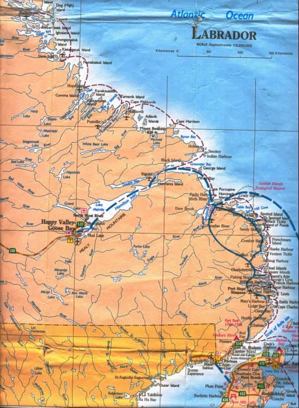
70 - ラブラドール沿 岸 VS Oは 196 0 を働い決済。
The Labrador Coastal Settlements where the VSO worked 1960 -- 70.
THE NEXT GET-TOGETHER OF THE VSO IN LABRADOR & FRIENDS IS ARRANGED FOR 12-13 AUGUST 2006 AT ALVESTON HOUSE HOTEL IN THORNBURY, BRISTOL, ENGLAND. IF YOU WOULD LIKE TO COME ALONG THEN PLEASE GET IN TOUCH NOW!
44 VOLUNTEERS HAVE BEEN LOCATED SO FAR (30 JANUARY 2006):
Tim Acey 69/70 Henley Harbour / Fiona Andersen (Kitwood) 69/70 Makkovik / Elizabeth Bloom (Hamer) 67/68 William's Harbour and Rexon's Cove / Peter Bradford 67/68 Charlottetown / Maggie Brett (Kitt) 68/69 Hopedale / Linda Budden (Addy)65/66 Makkovik / Susan Burd 67/68 Nain / Pamela Clark (Longbone) 67/68 Rigolet / Revd. Andrew Clements 67/68 Henley Harbour / Verity Conner (Styche) 68/69 George's Cove and Port Hope Simpson / Dr. Paul Cox 66/67 Hopedale / Kevin Crossley 67/68 Hopedale / Martyn Davy68/69 Henley Harbour Richard Gamble 68/69 Cape St. Charles/ Richard Gauntlett 67/68 Hopedale/ Dr. Mark Hayllar 68/69 Mud Lake / Christopher Haynes 69/70 Cape St. Charles and Lodge Bay/ Dr. Jim Hiller 61/62 Nain / Michael Hollis 68/69 Cartwright / Nancy Johnson (Buchan) deceased Hopedale 68/69 / Sandra Johnson (Crutchley) 68/69 Nain / Richard Kilburn 68/69 Hopedale/ Hilary Jones(Knight) 65/66 Makkovik / Nina Lewis (Shiels) 69-71 Hopedale / Geoff Liggins 68/69 Pinsent's Arm / Jean Lyall (Eldon)67-69 Nain / Enid MacNeil (Gardner) 66/67 Makkovik / Elizabeth Ollier (Wright) 67/68 Cartwright / Eric Pearson 67/68 Makkovik/ Jo Pearson (Read) 68/69 Fox Harbour/ John Penny 65/66 Nain / Anna Pollock (Neighbour) 67/68 Hopedale / Ernie Llewelyn Pritchard 69/70 Port Hope Simpson / Sheila Ruckley (Hinchcliffe)67/68 Port Hope Simpson/ Roland Scott Paradise River, Cartwright 68/69/ Pete Smart 69/70 George's Cove and Port Hope Simpson / Gus Stafford-Allen 66/67 Hopedale / Patricia Taylor 66/67 Nain / Ursie Thomas (Eden) 68/69 Mary's Harbour / Stella Val (Sulston)67/68 Cartwright / Sandra Wheeler (Smith) 66/67 Hopedale Tudor Williams 68/69 Rigolet / David Worn 68/69 Makkovik / Matthew Young 62/63 Nain /
VSO IN LABRADOR Website http://vsolabradorclues7.blogspot.com 24 January 2006 Extract
FROM 1 -- 3 AUGUST 2003, THE VSO IN LABRADOR & FRIENDS GET-TOGETHER WAS A SENSATIONAL SUCCESS
Over the weekend of August 1st, 2003 a group of 18 V.S.O. returned volunteers from Labrador 1960 to 71 plus spouses, partners, and Chris Walker the V.S.O. representative, making about 30 in all not forgetting a couple of Labrador dogs met for the first time at Pateley Bridge, North Yorkshire, U. K. We arrived from different parts of the world, Newfoundland, British Columbia and the UK.
The Get - Together was sensational. Old friends were reunited and many new friendships were born. The bond between us all was incredible. It was such a unique experience as it was the first time that the vast majority of us were able to share our Labrador experience with somebody who understood. Although we'd all lived in Labrador from 1960 to 71 this the first time we had ever met together as a group and exchanged our experiences. 12 of the 40 Labrador VSOs located so far either remained or returned to live permanently in Canada which says a lot about the Country's wonderful attractions on offer.
Each person brought with them memorabilia from their year's service which we now intend to make available to the Labrador people and interested others. We're keeping in touch as a group in the first instance to ensure our collection of journals, letters, photographs, videos, audio recordings, images, artifacts and our personal recollections of our time in Labrador return to the coastal communities ("the VSO in Labrador and Friends Documentation Project"). So many of us took photographs of our pupils and of our communities and we are now pursuing how to share our memories with the people concerned. We are looking to find ways of linking up with the international work of VSO and it was very helpful that Chris Walker, the V.S.O. representative was able to share his views with us. The group is already considering where to hold its next get-together with Labrador at the top of the list if possible.
For further information please contact:
llewelynpritchard@hotmail.com
THE NAMES OF THE REMAINING VSO IN LABRADOR YET TO BE FOUND ARE:
- ジェレミーアラート ン/ ナイ ン 6 4 分 の 6 3 利用不可写真 Jeremy Allerton / Nain 63/64 no photograph available
- ケイブラウ ン/ ナイ ン 7 0 分 の 69 Kay Brown / Nain 69/70
{kind=link}
- ジャ ン Crighton/ Cartwrigh t さ ん 7 0 分 の 69 Jean Crighton / Cartwright 69/70
{kind=link}
- スーザ ン· エメリ ー/ メアリ ー· ハーバ ー 6 8 分 の 67 Susan Emery / Mary's Harbour 67/68
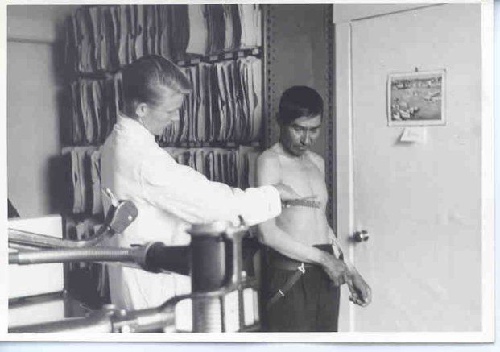
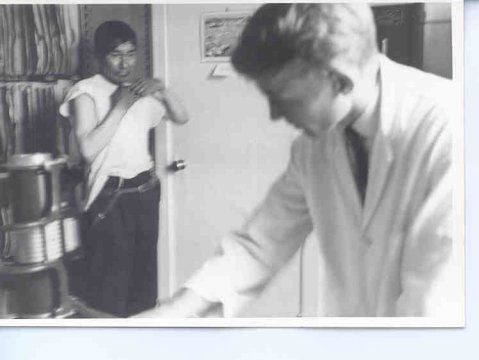 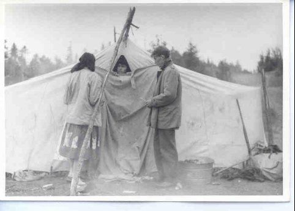 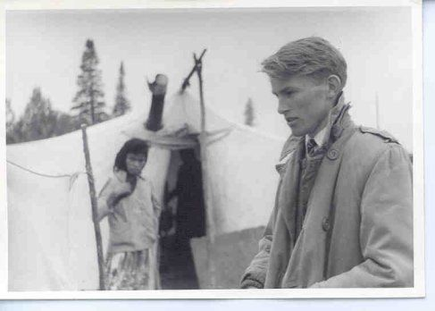 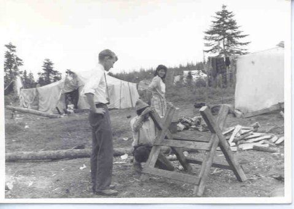 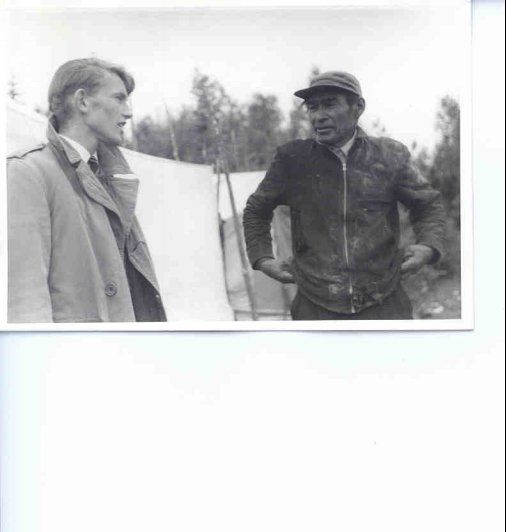 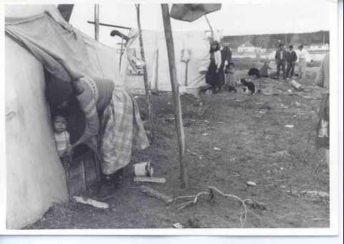 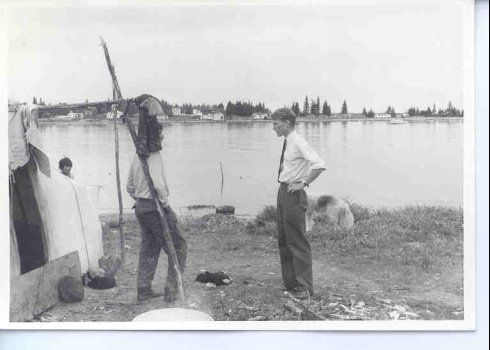 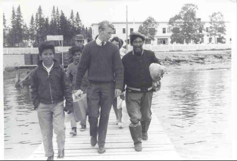
- アンソニ ー· ハウエ ル/ ナインと北西部の 川 6 1 分 の 60 Anthony Howell / Nain and North West River 60/61
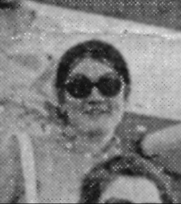
- ペギ ー· ア ン· ルンド（マクダーモット ）/ ナイ ン 7 0 分 の 69 Peggy Anne Lund (McDermott) /Nain 69/70
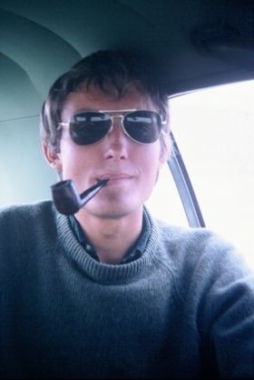
- 未知のアレクサンダーウエス ト/ 割り当て決 済 7 0 分 の 69 Alexander West / allocated settlement unknown 69/70
ラブラドー ル 196 5 年に職場で の VS O の写 真 - 67
Photographs of the VSO at Work in Labrador 1965 -- 67
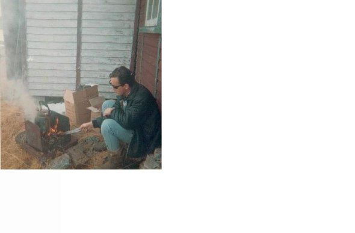
ノーザンライツ週末のキャンプ、ナン 、 196 6 年か ら 196 7 年
The Northern Lights Camping Weekend, Nain 1966-67
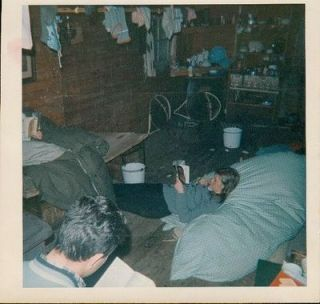
ノーザンライツユースクラブ、ナイ ン 196 6 年か ら 196 7 年
The Northern Lights Youth Club, Nain 1966-67

週末のキャンプ、ナン 、 196 6 年か ら 196 7 年からの復帰
Returning from the camping weekend, Nain 1966-67

歌、ナイ ン 196 6 年か ら 196 7 年を歌う
Sing song, Nain 1966-67
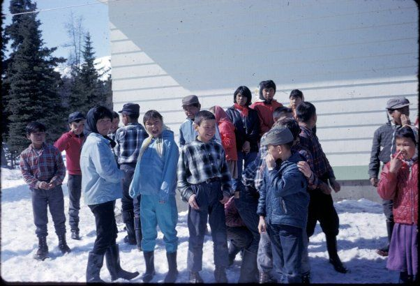
学校別の成績、ナン 、 196 6 年か ら 196 7 年
School different Grades, Nain 1966-67
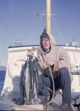
RCM P ボート 春 196 6 でマスのジョ ン· ペニー
John Penny with trout on RCMP boat Spring 1966
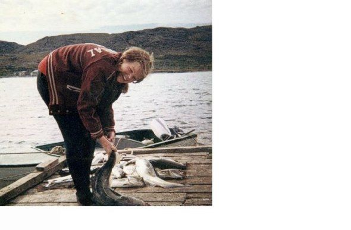
ナイ ン 196 6 か ら 196 7を coddin g パットテイラー初めて
Pat Taylor first time codding Nain 1966-67
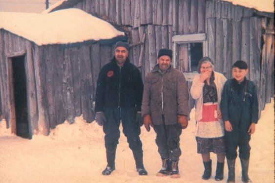
ウォー ド· ファミリー、ポートホープシンプソ ン 1970
The Ward Family, Port Hope Simpson 1970
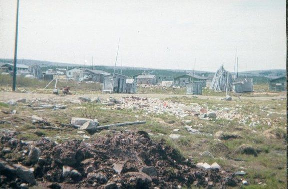
ロ ン Notle y の後ろの 窓 196 9 年からポートホープシンプソンのビュー
A view of Port Hope Simpson from Ron Notley's back window 1969
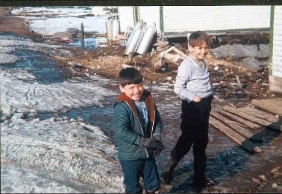
ヘンリーとゲイリーラッセル、メインストリート、ポートホープシンプソ ン 1970
Henry and Gary Russell, main street, Port Hope Simpson 1970
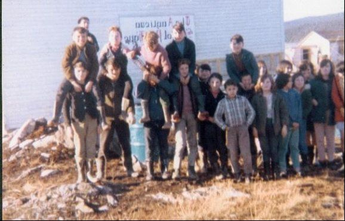
聖公会の学校のクラス、ポートホープシンプソ ン 1969
Anglican School class, Port Hope Simpson 1969
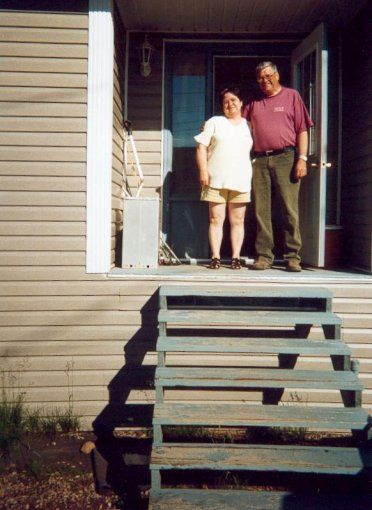
自宅でクロードとジャ ン Rumbol t、 200 2 年メアリ ー· ハーバ ー7月 2 5 日。クロードは、聖公会の学校、ポートホープシンプソン、ラブラドール、ニューファンドランド、カナダの校長だった
Claude and Jean Rumbolt at home, Mary's Harbour 25 July 2002. Claude was Principal of the Anglican School, Port Hope Simpson, Labrador, Newfoundland, Canada
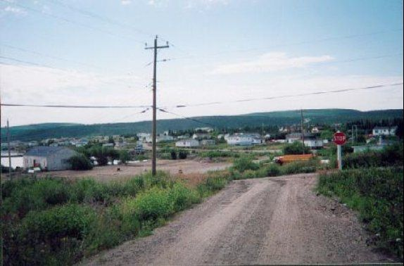
土地利用の変更：現在、ストレージの目的のために地元企業が使用した古いアングリカ ン· スクールルーム （ L . ）、ポートホープシンプソン、ラブラドール、ニューファンドランド、カナ ダ 200 2年7月 2 7 日に向かって。
Changing Land Use: looking towards the old Anglican School Rooms (l.), Port Hope Simpson, Labrador, Newfoundland, Canada 27 July 2002 now used by local business for storage purposes.
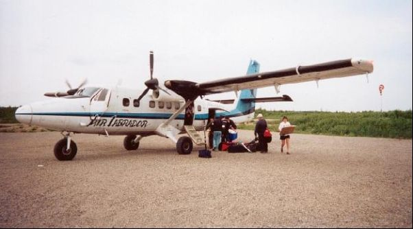
ポートホープシンプソン地方空港、ラブラドール、ニューファンドランド、カナ ダ 200 2年7月 2 7日 200 2年7月 2 0 日
Port Hope Simpson Regional Airport, Labrador, Newfoundland, Canada 27 July 2002 20 July 2002
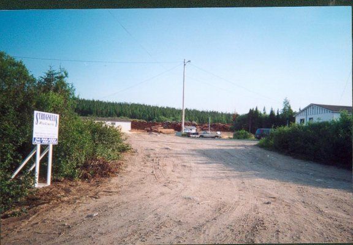
Strugnall s ウッドヤード、ポートホープシンプソン、ラブラドール、ニューファンドランド、カナ ダ 200 2年7月 2 7 日には、ボートの建物に多様化することによって維持され、町のロギング遺産を開発しました。
The Strugnalls Woodyard, Port Hope Simpson, Labrador, Newfoundland, Canada 27 July 2002 has maintained and developed the Town's logging heritage by diversifying into boat-building.
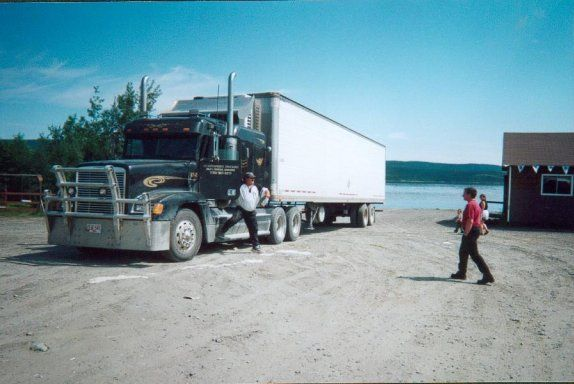
ビッグリグ は 200 2年7 月アレクシスホテル、ポートホープシンプソン、ニューファンドラン ド· ラブラドール州、カナ ダ 2 6℃ で呼び出す
Big rig calls in at The Alexis Hotel, Port Hope Simpson, Newfoundland and Labrador, Canada 26 July 2002
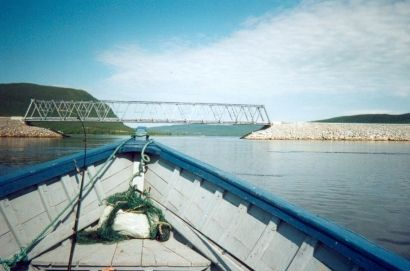
200 2年7 ポートホープシンプソン、ニューファンドラン ド· ラブラドール州、カナ ダ 2 6 でアレクシス川を渡る横断ラブラドール道路橋、国 道 51 0 、
The Trans-Labrador Highway bridge, Route 510, crossing the Alexis River at Port Hope Simpson, Newfoundland and Labrador, Canada 26 July 2002
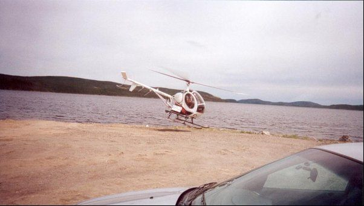
アレクシスホテル、ポートホープシンプソン、ニューファンドラン ド· ラブラドール州、カナ ダ 200 2年7月 2 5 日近くにヘリコプター着陸
Helicopter landing near The Alexis Hotel, Port Hope Simpson, Newfoundland and Labrador, Canada 25 July 2002